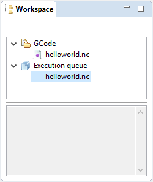
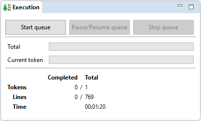

Running a milling job¶
Introduction¶
Now that you managed to connect to your CNC board, it’s time to run some actual milling job. This tutorial will guide you through the use of the workspace manager and the execution queue manipulation.
Note
This tutorial does not cover homing and machine setup which should be performed before each run
Load GCode files¶
- Import a GCode file in the workspace, using the button or by pressing Ctrl+G
- In the opening selection dialog, select the GCode file to import and validate.
- After validation the file is displayed in the Workspace part and the GCode is rendered in the 3D visualisation part.
Prepare execution queue¶
- Add the newly imported file in the Execution queue by doing a right click on the file in the workspace tree, and click Add to execution queue

The GCode file in the execution queue
Run the execution queue¶
The Execution part now shows information about the execution queue.
To run your job, make sure Goko is connected to your machine, and click the button.

The execution part showing information about the current run